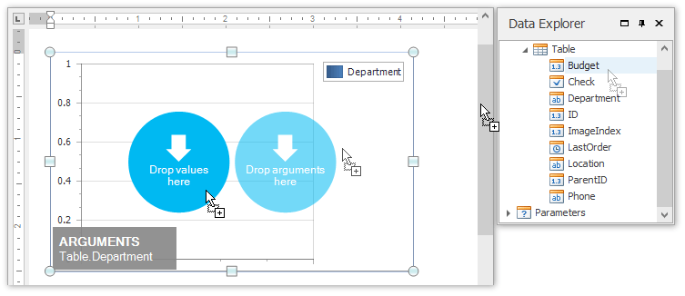
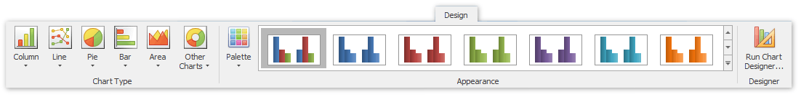
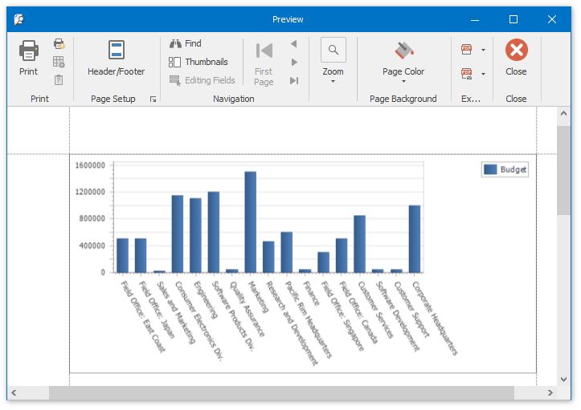

Create a Chart-Based Report
This tutorial describes the steps used to add a chart to your Snap report. Snap supports many chart types, as well as multiple visual appearance settings and chart palettes.
Snap also provides the Chart Wizard, which allows you to quickly create and customize complex charts. However, when advanced charting functionality is not required, Snap provides an even easier way to create and customize your charts.
Do the following steps to create a chart-based report.
- Create a new Snap document and bind it to the required table.
Click the Chart command in the Insert tab of the main toolbar.

In the created chart, the blue circles correspond to the values and arguments of the chart. Drop one field from the Data Explorer onto the "arguments" region in the chart...

...and the other onto the "values" region.

You can change the default chart type to one that best meets your requirements by selecting the chart and switching to the Design tab of the main toolbar.

In the same tab, you can also run Chart Wizard and select the chart's palette and visual appearance.
The Snap report with a chart is now ready. To view the result, switch to the File menu of the main toolbar and click the Print Preview button.
